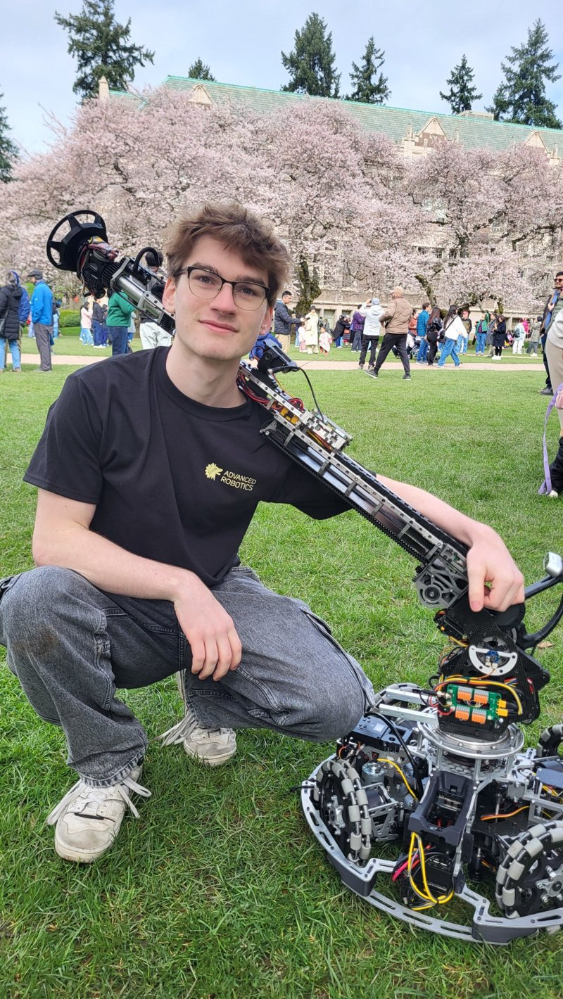

Casey Frantz

I'm a mechanical engineering student at the University of Washington. I design mechanisms, make parts, and work through the details that turn a CAD model into reliable hardware.
During my internship, I improved a motor endurance test chamber and built a machine for soldering MR30 wire harnesses. That work covered cooling, wiring, controls, fixtures, and the operator process. I like getting those pieces to work together, then seeing the difference in cycle time and reliability.
Robotics is where much of this started. I led manufacturing for a FIRST Robotics team that reached the world championship and later mentored students through their own designs. At UW, I've worked on the ARC robot's two-axis wrist, built Tennis Buddy in a 24-hour hackathon, and designed a fall-prevention harness concept with a teammate for an ASME CADathon.
Each project has its own page with photos and details about my role. You can also browse the updated visual portfolio (PDF).